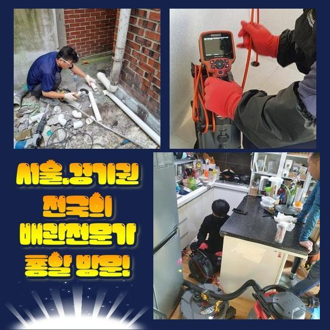
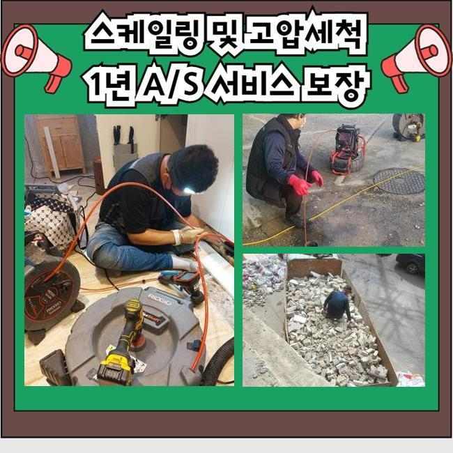
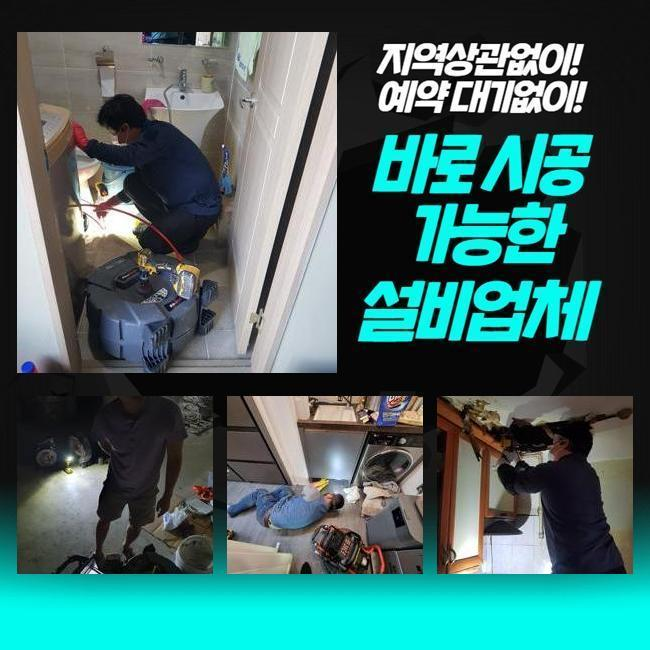
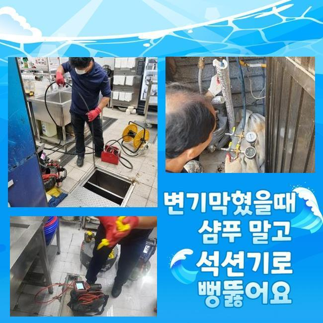
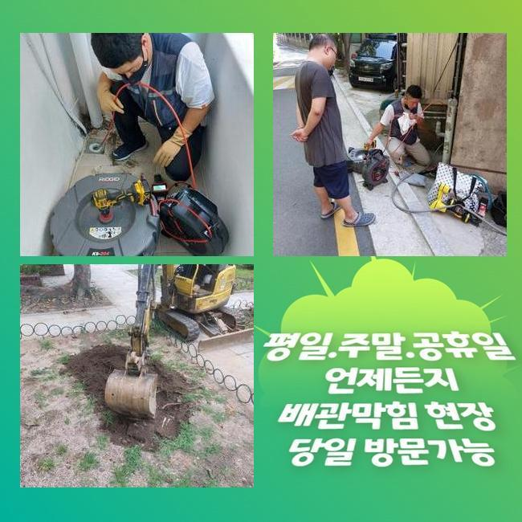
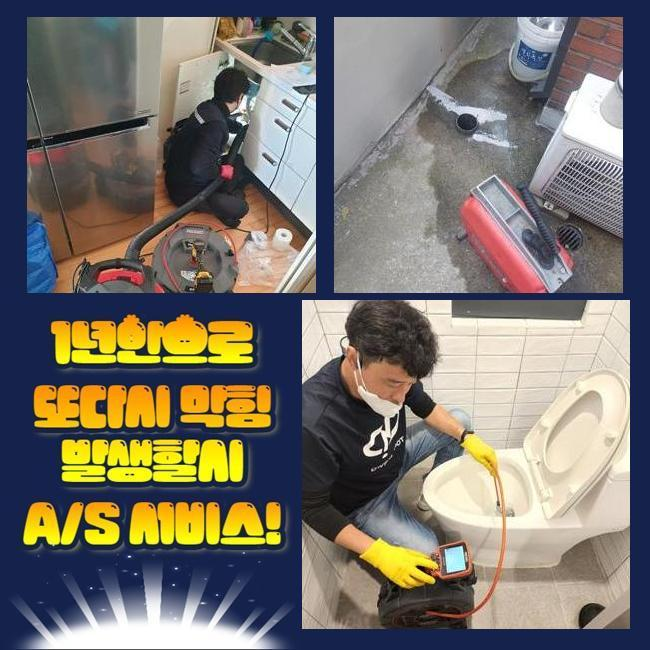
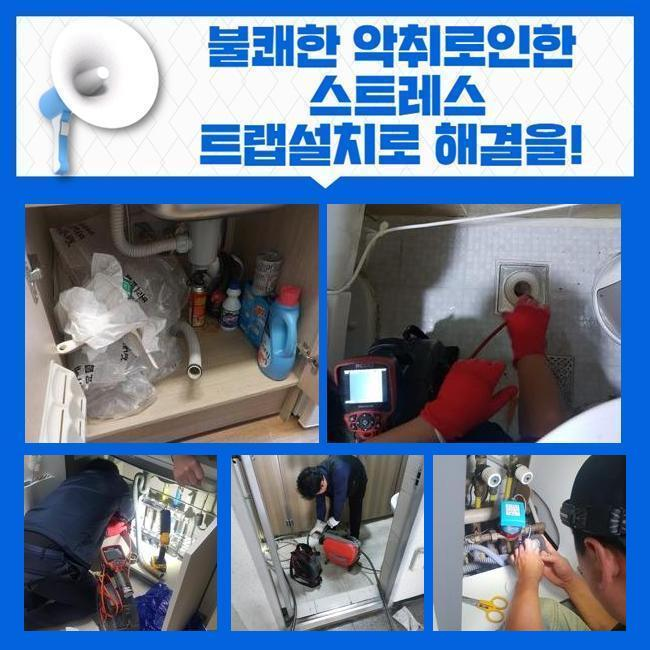

🏠 내삼미동 누읍동 싱크대막힘 두곡동 세탁실막힘
용인 싱크대막힘 전문 시공 후기

📋 작업 개요
- 위치: 용인
- 서비스 유형: 싱크대막힘, 하수구막힘, 배관막힘, 집수정막힘, 역류해결, 뚫는업체, 배관청소, 배관보수, 악취차단
- 작업 일시: 2024. 11. 9. 2:17
- 업체명: 하수구수사대 (010-5615-2118)
🔍 문제 상황
내삼미동 누읍동 싱크대막힘 두곡동 세탁실막힘
절대 없어선 알 될 화장실의 배수 장애로 인하여 용수가 그대로 고이다 못해 내부 압력으로 역행도 되어 얼른 방문을 한 것입니다
화장실의 바닥 배수구로 물을 붓는 때도 그렇지만 세면대 수도꼭지에서 물을 공급해 보았을 때도 엇비슷한 문제점들이 연이어 말썽을 부리곤 했습니다
현재 포스팅을 읽으시는 고객님이 계신 댁에서도 이러한 고충이 나타나서 하수 시스템 관리자를 수소문 하시지는 않나요?
보통의 욕실의 배수관이 차단되어 버리는 일의 이유는 어떤 것이며 무슨 장비를 써서 풀어나가는 지 선보여드릴게요!
원래라면 하수구 경로로 유입되어야 하는 물이 모종의 사태로 역류해서 타일 표면에 누적되어서 찰랑대는 모습이었어요
이는 욕실 세면대 수도꼭지에서 수도를 개방했을 경우에도 유관한 증세를 지닌 사태가 초래되는 중이었습니다
여기만 특수한 경우가 아니라 욕실 배수망이 망가지면 역류 물이 고였다면 추정되는 원인은 비슷하다고 할 수 있어요
평범한 거주지의 경우에는 테라스 쪽이나 욕실 주방의 배수 설비까지가 한 줄기로 뭉쳐져서 야외의 정화시설로 방출되는 모습으로 설계가 이루어진 것이 가장 흔합니다
그렇게 한 지점에서 결합돼서든 지점을 메인배관이라고 하며 막대한 중책을 담당하는 기능을 담당하고 있어요

🔎 원인 분석
💡 전문가 진단: 정밀 진단 장비를 사용하여 슬러지의 고착 여부를 판명하고 타격/세척 작업을 실시했습니다.
이곳이 봉쇄됐다보니 실내 화장실 부엌부터 물을 공급받는 모든 곳에서 물 이용이 있고 나서 수로에서 딱 차단이 되어버려서 역류까지 벌어지는 것이죠
내부가 잔뜩 오염되어서 문제가 된 메인 관로를 고쳐내면 해결의 실마리가 보일 것입니다
먼저 여러 파이프가 존재하는 보일러에 바짝 다가가서 문제점이 무엇인지를 진단을 해보기로 시도했습니다
여러 사례들을 미루어 보자면 배관 막힘이 최고조에 이른 곳이 아마 보일러실이지 싶어서 이 공간을 처리를 해주면 과다한 절차들을 감소시키고 빠르게 보수를 마칠 수 있을 듯 했어요
이러한 막힘을 만든 사유라고 할 수 있는 대상의 종류가 뭔지를 캐치해내기 위하여 배관 촬영 카메라를 심층적인 구간까지 노즐을 삽입한 후 점검에 돌입했습니다
몇몇 특정 업체에서는 특화된 관찰 장치를 통한 배관의 세부 평가를 거치는 단계를 쏙 빼고 작업을 하는 것이 가장 흔합니다
이렇게 건너뛰는 것은 전문적인 사람의 대처 방안이라고는 말하기 곤란하며 오류들을 모조리 찾는 목표에 못미치는 성과를 내게 될 것입니다
그러므로 의뢰 장소에 배수가 끊긴 이유가 뭔지 본질을 알아내고서 후에 후속작업에 들어가야 결함이 일어나지 않고도 극복을 하게 됩니다
내시경을 쭉 넣어서 관찰을 해봤더니 화면에 누런 색으로 굳어진 오염원들이 위치하여 존재감 넘치게 고정되어 있었어요
아까 화장실 안에 숨겨져있는 배관들은 주방 베란다와 연결돼서 옥외로 흘러나가게 되는 구조라고 언급한 바 있습니다

🔧 작업 과정
소규모의 조각난 찌꺼기들이 오래 집적되면서 파이프를 차단하게 된 것이 하수관 장애의 커다란 동기가 되었다 싶었어요
다년간 점진적으로 쌓이면서 물이 아예 끊기게 만든 침전물을 모두 걷어버리면 구멍에서 튀어나오는 역류도 갈무리 지을 수 있을 것입니다
이 공간에 쓰는 기기는 하수구 청소에 있어서 여러 차례 만나게 되는 전동식 스프링이라고 말하는 뚫는 장치입니다
말그대로 스프링과 같은 외형을 지니고 있는 부속품과 몸체를 통합해준 이후에 적용하게 됩니다
조립된 장치의 끝부분을 처리를 해주려고 예정된 곳에 설치를 해서 본체의 전원을 켜면 장치의 최전방에 이르기까지 고르게 파워가 전달돼요
이러한 파워를 기반으로 고속회전을 하게 되는데 스케일링하듯 배관로 안에 데미지를 가하는 것입니다
해당 작업을 통과하면 파이프의 여기저기에 산발적으로 기생하고 있던 더러운 오염원이 갈리면서 외부로 유출이 되거나 걸어서 꺼내주면서 말끔한 내부가 조성됩니다
초반에는 꿈쩍도 하지 않던 건물 바깥쪽의 집수정이 강력한 스프링의 힘으로 시원스럽게 청소를 해주고나니 달라진 게 확실하게 보였어요
오래 지속을 해준 다음에 내부 관찰을 재실시했더니 쿰쿰한 악취까지 유발했던 더러운 액체는 소멸됐고 대신 맑은 물이 경쾌하게 이동하는 움직임이 보였습니다
이러한 장면을 보자면 막힘을 낳았던 덩어리들이 순탄하게 척결되었기에 배수로가 뚫렸음을 시사하는 것입니다
얼마간의 하수구 뚫는 작업을 하고 난 후 다시 카메라를 메인배관에 넣어 상태를 확인해보기로 했습니다
습한 내부에서 썩으면서 냄새까지 조성했었던 오염물질은 흔적 없이 사라져서 업그레이드가 된 듯 위생적이게 바뀐 것을 직접 볼 수 있게 해드립니다
소개해 드린 작업지도 그렇지만 물을 여러 용도로 활용하면서 찌꺼기가 녹아나는데 배관에 찌꺼기가 조금씩 양을 불리다보면 오래 방치가 된다면 물길이 완전 가로막히거나 미생물이 증식하는 등의 다양한 유형의 부작용이 앞길을 가로막을 것입니다
주택이나 상가 등 어떤 곳에서라도 유발될 수 있는 사고이므로 숙련공이 키를 쥐고 리드하는 전문 배관 정비를 받아보는 것이 건물 안전을 위해 필요해요
오수가 울컥대며 나오던 사안도 같이 극복됐는지 체크하면서 오늘 뚫어드린 현장의 실무를 끝내고 결산해 드렸습니다
실내가 한층 깔끔해진 것을 바로 인식할 수 있었기에 보람이 느껴지더라고요


✅ 작업 완료
욕실 이외의 다른 곳에서도 일부러 물을 열어보았는데 지연 없이 순조롭게 매끄럽게 빠져나가는 것도 다수 확인해 주었습니다
욕실배관의 마비로 인한 불쾌함을 조장하는 사건들이 야무진 청소를 이어간 덕에 무결점으로 완료된 것 같습니다
고객님이 머무르시는 건물처럼 어디라도 하수구 시스템이 봉쇄되어 버리는 경우에는 문제의 뿌리와 해결 방법이 제가 알려드린 내용과 비슷할 것입니다
우선은 현재 진행 중인 사태가 어떤 것인지 고객님이 편하신 대로 말해주시면 준비를 해가서 바로 손봐드리겠습니다
방문은 편하신 시간에 맞춰드리니 나중으로 떠넘기지 마시고 중요한 하수 설비를 늦지 않게 되돌리셨으면 합니다




⚠️ 주방 싱크대 배관 막힘 예방 수칙
- ✅ 기름기가 묻은 식기나 프라이팬은 설거지 전 키친타올로 반드시 기름때를 닦아내세요.
- ✅ 주기적으로 싱크대 개수대에 뜨거운 물을 가득 받아 한 번에 내려 배관 내부 기름을 씻어내세요.
- ✅ 배수구 거름망을 미세한 필터로 사용하시고 음식물 찌꺼기가 틈으로 새어 들지 않게 관리하세요.
- ✅ 베이킹소다와 식초를 뜨거운 물과 함께 일주일에 한 번씩 부어주면 배관 살균과 막힘 예방에 좋습니다.
💡 핵심 정리
- 확실한 장비 작업(내시경 점검 및 샤프트 스케일링)으로 원인을 뿌리 뽑습니다.
- 작업 후 1년 이내에 동일한 부위 재발 시 100% 무상 A/S 서비스를 보장합니다.
- 서울 · 경기 · 인천 전 지역에 24시간 언제든 긴급 출동할 수 있도록 항시 대기 중입니다.
❓ 자주 묻는 질문 (FAQ)
🚨 용인 싱크대막힘 문제로 고민이신가요?
정확한 원인 진단과 확실한 시공으로 재발 없는 해결을 약속드립니다.
24시간 긴급 출동 | 서울 · 경기 · 인천 전지역 | 1년 내 재발 시 무상 A/S